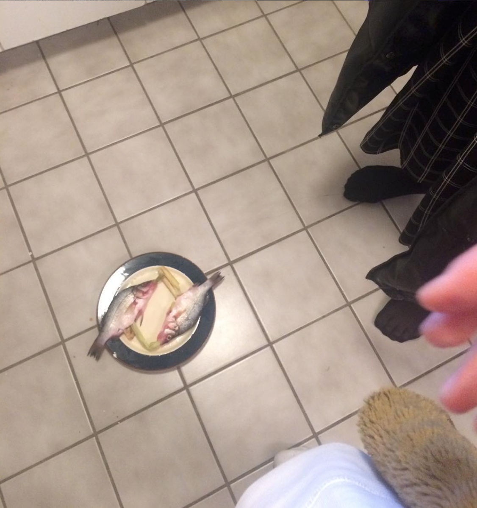

steamed fish
trout gang (gary prefers sea bass)
- 1x medium size fish, sea bass or rainbow trout or similar
- Big chunk of ginger, sliced into long discs, 2mm thick
- Spring/green onions, sliced finely, in a long diagonal, almost lengthways in wispy pieces
- Veg oil
- tbsp light soy sauce

- gut fish if necessary, then put ginger in a row inside fish belly. Pile some of the spring onion slices on top of fish. Put fish in steamer, cut fish in half or remove head if necessary. (If no bamboo steamer, then a wokful of water with a upturned bowl to hold the plate above the water can also work, sealed with a lid.)
- Once water is rolling fiercely, steam fish in hot steam for approx 10min, depending on thickness of fish. Poke it with your finger, if the flesh gives in with strong tendencies to flake, you're cooked. If it feels pliant but shows no sign of flaking, keep on steaming.
- Once fish is out of there, pile some more raw spring onion onto plated fish, followed by a good glug of soy sauce. heat up about 50ml veg oil until it's very hot!!! Pour hot hot oil over the green onions piled over the fish slowly, so it sizzles and makes the onions fragrant before mixing into the soy sauce.